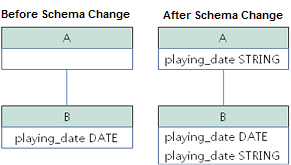
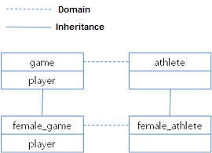

Class Inheritance
To explain the concept of inheritance, a table is expressed as a class, a column is expressed as an attribute, and a type is expressed as a domain.
Classes in CUBRID database can have class hierarchy. Attributes and methods can be inherited through such hierarchy. As shown in the previous section, you can create a Manager class by inheriting attributes from an Employee class. The Manager class is called the sub class of the Employee class, and the Employee class is called the super class of the Manager class. Inheritance can simplify class creation by reusing the existing class hierarchy.
CUBRID allows multiple inheritances, which means that a class can inherit attributes and methods from more than one super class. However, inheritance can cause conflicts when an attribute or method of the super class is added or deleted.
Such conflict occurs in multiple inheritance if there are attributes or methods with the same name in different super classes. For example, if it is likely that a class inherits attributes of the same name and type from more than one super class, you must specify the attributes to be inherited. In such a case, if the inherited super class is deleted, a new attribute of the same name and type must be inherited from another super class. In most cases, the database system resolves such problems automatically. However, if you don’t like the way that the system resolves a problem, you can resolve it manually by using the INHERIT clause.
When attributes are inherited from more than one super class, it is possible that their names are to be the same, while their domains are different. For example, two super classes may have the same attribute, whose domain is a class. In this case, a sub class automatically inherits attributes with more specialized (a lower in the class hierarchy) domains. If such conflict occurs between basic data types (e.g. STRING or INTEGER) provided by the system, inheritance fails.
Conflicts during inheritance and their resolutions will be covered in the Resolving Class Conflicts section.
Note
The following cautions must be observed during inheritance:
The class name must be unique in the database. An error occurs if you create a class that inherits another class that does not exist.
The name of a method/attribute must be unique within a class. The name cannot contain spaces, and cannot be a reserved keyword of CUBRID. Alphabets as well as ‘_’, ‘#’, ‘%’ are allowed in the class name, but the first character cannot be ‘_’. Class names are not case-sensitive. A class name will be stored in the system after being converted to lowercase characters.
Encryption option (TDE) of the class is not inherited. For more information, see Table Encryption (TDE).
Note
A super class name can begin with the user name so that the owner of the class can be easily identified.
Class Attribute and Method
You can create class attributes to store the aggregate property of all instances in the class. When you define a CLASS attribute or method, you must precede the attribute or method name with the keyword CLASS. Because a class attribute is associated with the class itself, not with an instances of the class, it has only one value. For example, a class attribute can be used to store the average value determined by a class method or the timestamp when the class was created. A class method is executed in the class object itself. It can be used to calculate the aggregate value for the instances of the class.
When a sub class inherits a super class, each class has a separate storage space for class attributes, so that two classes may have different values of class attribute. Therefore, the sub class does not change even when the attributes of the super class are changed.
The name of a class attribute can be the same as that of an instance attribute of the same class. Likewise, the name of a class method can be the same as that of an instance method of the same class.
Order Rule for Inheritance
The following rules apply to inheritance. The term class is generally used to describe the inheritance relationship between classes and virtual classes in the database.
For an object without a super class, attributes are defined in the same order as in the CREATE statement (an ANSI standard).
If there is one super class, locally created attributes are placed after the super class attributes. The order of the attributes inherited from the super class follows the one defined during the super class definition. For multiple inheritance, the order of the super class attributes is determined by the order of the super classes specified during the class definition.
If more than one super class inherits the same class, the attribute that exists in both super classes is inherited to the sub class only once. At this time, if a conflict occurs, the attribute of the first super class is inherited.
If a name conflict occurs in more than one super class, you can inherit only the ones you want from the super class attributes by using the INHERIT clause in order to resolve the conflict.
If the name of the super class attribute is changed by the alias option of the INHERIT clause, its position is maintained.
INHERIT Clause
When a class is created as a sub class, the class inherits all attributes and methods of the super class. A name conflict that occurs during inheritance can be handled by either a system or a user. To resolve the name conflict directly, add the INHERIT clause to the CREATE CLASS statement.
CREATE CLASS
.
.
.
INHERIT resolution [{, resolution}] ;
resolution:
[column_name | method_name] OF [schema_name.]superclass_name [AS alias]
In the INHERIT clause, specify the name of the attribute or method of the super class to inherit. With the ALIAS clause, you can resolve a name conflict that occurs in multiple inheritance statements by inheriting a new name.
ADD SUPERCLASS Clause
To extend class inheritance, add a super class to a class. A relationship between two classes is created when a super class is added to an existing class. Adding a super class does not mean adding a new class.
ALTER CLASS
.
.
.
ADD SUPERCLASS [schema_name.]superclass_name [{, [schema_name.]superclass_name}]
[INHERIT resolution [{, resolution}]] ;
resolution:
[column_name | method_name] OF [schema_name.]superclass_name [AS alias]
Specify the name of the superclass to be added in superclass_name. Attributes and methods of the super class can be inherited by using the syntax above.
Name conflicts can occur when adding a new super class. If a name conflict cannot be resolved by the database system, attributes or methods to inherit from the super class can be specified by using the INHERIT clause. You can use aliases to inherit all attributes or methods that cause the conflict. For details on super class name conflicts, see Class Conflict Resolution.
The following example shows how to create the female_event class by inheriting the event class included in demodb.
CREATE CLASS female_event UNDER event;
DROP SUPERCLASS Clause
Deleting a super class from a class means removing the relationship between two classes. If a super class is deleted from a class, it changes inheritance relationship of the classes as well as of all their sub classes.
ALTER CLASS
.
.
.
DROP SUPERCLASS [schema_name.]superclass_name [{, [schema_name.]superclass_name}]
[INHERIT resolution [{, resolution}]] ;
resolution:
[column_name | method_name] OF [schema_name.]superclass_name [AS alias]
Specify the name of the superclass to be deleted in superclass_name. For the second class_name, specify the name of the super class to be deleted. If a name conflict occurs after deleting a super class, see the Class Conflict Resolution section for the resolution.
The following example shows how to inherit the female_event class from the event class.
CREATE CLASS female_event UNDER event
The following example shows how to delete the super class event from the f emale_event class. Attributes that the female_event class inherited from the even class no longer exist.
ALTER CLASS female_event DROP SUPERCLASS event;
Class Conflict Resolution
If you modify the schema of the database, conflicts can occur between attributes or methods of inheritance classes. Most conflicts are resolved automatically by CUBRID otherwise, you must resolve the conflict manually. Therefore, you need to examine the possibility of conflicts before modifying the schema.
Two types of conflicts can cause damage to the database schema. One is conflict with a sub class when the sub class schema is modified. The other is conflict with a super class when the super class is modified. The following are operations that may cause conflicts between classes.
Adding an attribute
Deleting an attribute
Adding a super class
Deleting a super class
Deleting a class
If a conflict occurs as a result of the above operations, CUBRID applies a basic resolution to the sub class where the conflict occurred. Therefore, the database schema can always maintain consistent state.
Resolution Specifier
Conflicts between the existing classes or attributes, and inheritance conflicts can occur if the database schema is modified. If the system fails to resolve a conflict automatically or if you don’t like the way the system resolved the problem, you can suggest how to resolve the conflict by using the INHERIT clause of the ALTER statement (often referred to as resolution specifier).
When the system resolves the conflict automatically, basically, the existing inheritance is maintained (if any). If the previous resolution becomes invalid when the schema is modified, the system will arbitrarily select another one. Therefore, you must avoid excessive reuse of attributes or methods in the schema design stage because the way the system will resolve the conflict cannot always be predictable.
What will be discussed concerning conflicts is applied commonly to both attributes and methods.
ALTER [class_type] [schema_name.]class_name alter_clause
[INHERIT resolution [{, resolution }]] ;
resolution:
[column_name | method_name] OF [schema_name.]superclass_name [AS alias]
Superclass Conflict
Adding a super class
The INHERIT clause of the ALTER CLASS statement is optional, but must be used when a conflict occurs due to class changes. You can specify more than one resolution after the INHERIT clause.
superclass_name specifies the name of the super class that has the new attribute(column) or method to inherit when a conflict occurs. column_name or method_name specifies the name of the attribute or method to inherit. You can use the AS clause when you need to change the name of the attribute or method to inherit.
The following example shows how to create the soccer_stadium class by inheriting the event and stadium classes in the olympic database of demodb. Because both event and stadium classes have the name and code attributes, you must specify the attributes to inherit using the INHERIT clause.
CREATE CLASS soccer_stadium UNDER event, stadium
INHERIT name OF stadium, code OF stadium;
When the two super classes (event and stadium) have the name attribute, if the soccer_stadium class needs to inherit both attributes, it can inherit the name unchanged from the stadium class and the name changed from the event class by using the alias clause of the INHERIT.
The following example shows in which the name attribute of the stadium class is inherited as it is, and that of the event class is inherited as the purpose alias.
ALTER CLASS soccer_stadium
INHERIT name OF event AS purpose;
Deleting a super class
A name conflict may occur again if a super class that explicitly inherited an attribute or method is dropped by using the INHERIT. In this case, you must specify the attribute or method to be explicitly inherited when dropping the super class.
CREATE CLASS a_tbl(a INT PRIMARY KEY, b INT);
CREATE CLASS b_tbl(a INT PRIMARY KEY, b INT, c INT);
CREATE CLASS c_tbl(b INT PRIMARY KEY, d INT);
CREATE CLASS a_b_c UNDER a_tbl, b_tbl, c_tbl INHERIT a OF b_tbl, b OF b_tbl;
ALTER CLASS a_b_c
DROP SUPERCLASS b_tbl
INHERIT b OF a_tbl;
The above example shows how to create the a_b_c class by inheriting a_tbl, b_tbl and c_tbl classes, and delete the b_tbl class from the super class. Because a and b are explicitly inherited from the b_tbl class, you must resolve their name conflicts before deleting it from the super class. However, a does not need to be specified explicitly because it exists only in the a_tbl class except for the b_tbl class to be deleted.
Compatible Domains
If the conflicting attributes do not have compatible domains, the class hierarchy cannot be created.
For example, the class that inherits a super class with the phone attribute of integer type cannot have another super class with the phone attribute of string type. If the types of the phone attributes of the two super classes are both String or Integer, you can add a new super class by resolving the conflict with the INHERIT clause.
Compatibility is checked when inheriting an attribute with the same name, but with the different domain. In this case, the attribute that has a lower class in the class inheritance hierarchy as the domain is automatically inherited. If the domains of the attributes to inherit are compatible, the conflict must be resolved in the class where an inheritance relationship is defined.
Sub class Conflict
Any changes in a class will be automatically propagated to all sub classes. If a problem occurs in the sub class due to the changes, CUBRID resolves the corresponding sub class conflict and then displays a message saying that the conflict has been resolved automatically by the system.
Sub class conflicts can occur due to operations such as adding a super class, or creating/deleting a method or an attribute. Any changes in a class will affect all sub classes. Since changes are automatically propagated, harmless changes can even cause side effects in sub classes.
Adding Attributes and Methods
The simplest sub class conflict occurs when an attribute is added. A sub class conflict occurs if an attribute added to a super class has the same name as one already inherited by another super class. In such cases, CUBRID will automatically resolve the problem. That is, the added attribute will not be inherited to all sub classes that have already inherited the attribute with the same name.
The following example shows how to add an attribute to the event class. The super classes of the soccer_stadium class are the event and the stadium classes, and the nation_code attribute already exists in the stadium class. Therefore, a conflict occurs in the soccer_stadium class if the nation_code attribute is added to the event class. However, CUBRID resolves this conflict automatically.
ALTER CLASS event
ADD ATTRIBUTE nation_code CHAR(3);
If the event class is dropped from the soccer_stadium super class, the cost attribute of the stadium class will be inherited automatically.
Dropping Attributes and Methods
When an attribute is dropped from a class, any resolution specifiers which refer to the attribute by using the INHERIT clause are also removed. If a conflict occurs due to the deletion of an attribute, the system will determine a new inheritance hierarchy. If you don’t like the inheritance hierarchy determined by the system, you can determine it by using the INHERIT clause of the ALTER statement. The following example shows such conflict.
Suppose there is a sub class that inherits attributes from three different super classes. If a name conflict occurs in all super classes and the explicitly inherited attribute is dropped, one of the remaining two attributes will be inherited automatically to resolve the problem.
The following example shows sub class conflict. Classes B, C and D are super classes of class E, and have an attribute whose name is team and the domain is team_event. Class E was created with the place attribute inherited from class C as follows:
create class E under B, C, D
inherit place of C;
In this case, the inheritance hierarchy is as follows:

Suppose that you decide to delete class C from the super class. This drop will require changes to the inheritance hierarchy. Because the domains of the remaining classes B and D with the game attribute are at the same level, the system will randomly choose to inherit from one of the two classes. If you don’t want the system to make a random selection, you can specify the class to inherit from by using the INHERIT clause when you change the class.
ALTER CLASS E INHERIT game OF D;
ALTER CLASS C DROP game;
Note
If the domain of one game attribute in one super class is event and that of another super class is team_event, team_event is more specific than event because team_event is the descendant of event. Therefore, a super class that has the team_event attribute as a domain will be inherited; a user cannot forcefully inherit a super class that has the event attribute as a domain.
Schema Invariant
Invariants of a database schema are a property of the schema that must be preserved consistently (before and after the schema change). There are four types of invariants: invariants of class hierarchy, name, inheritance and consistency.
Invariant of class hierarchy
has a single root and defines a class hierarchy as a Directed Acyclic Graph (DAG) where all connected classes have a single direction. That is, all classes except the root have one or more super classes, and cannot become their own super classes. The root of DAG is “object,” a system-defined class.
Invariant of name
means that all classes in the class hierarchy and all attributes in a class must have unique names. That is, attempts to create classes with the same name or to create attributes or methods with the same name in a single class are not allowed.
Invariant of name is redefined by the ‘RENAME’ qualifier. The ‘RENAME’ qualifier allows the name of an attribute or method to be changed.
Invariant of inheritance
means that a class must inherit all attributes and methods from all super classes. This invariant can be distinguished with three qualifiers: source, conflict and domain. The names of inherited attributes and methods can be modified. For default or shared value attributes, the default or shared value can be modified. Invariant of inheritance means that such changes will be propagated to all classes that inherit these attributes and methods.
source qualifier
means that if class C inherits sub classes of class S, only one of the sub class attributes (methods) inherited from class S can be inherited to class C. That is, if an attribute (method) defined in class S is inherited by other classes, it is in effect a single attribute (method), even though it exists in many sub classes. Therefore, if a class multiply inherits from classes that have attributes (methods) of the same source, only one appearance of the attribute (method) is inherited.
conflict qualifier
means that if class C inherits from two or more classes that have attributes (methods) with the same name but of different sources, it can inherit more than one class. To inherit attributes (methods) with the same name, you must change their names so as not to violate the invariant of name.
domain qualifier
means that a domain of an inherited attribute can be converted to the domain’s sub class.
Invariant of consistency
means that the database schema must always follow the invariants of a schema and all rules except when it is being changed.
Rule for Schema Changes
The Invariants of a Schema section has described the characteristics of schema that must be preserved all the time.
There are some methods for changing schemas, and all these methods must be able to preserve the invariants of a schema. For example, suppose that in a class which has a single super class, the relationship with the super class is to be removed. If the relationship with the super class is removed, the class becomes a direct sub class of the object class, or the removal attempt will be rejected if the user specified that the class should have at least one super class. To have some rules for selecting one of the methods for changing schemas, even though such selection seems arbitrary, will be definitely useful to users and database designers.
The following three types of rules apply: conflict-resolution rules, domain-change rule and class-hierarchy rule.
Seven conflict-resolution rules reinforce the invariant of inheritance. Most schema change rules are needed because of name conflicts. A domain-change rule reinforces a domain resolution of the invariant of inheritance. A class-hierarchy rule reinforces the invariant of class hierarchy.
Conflict-Resolution Rules
Rule 1: If an attribute (method) name of class C and an attribute name of the super class S conflict with each other (that is, their names are same), the attribute of class C is used. The attribute of S is not inherited.
If a class has one or more super classes, three aspects of the attribute (method) of each super class must be considered to determine whether the attributes are semantically equal and which attribute to inherit. The three aspects of the attribute (method) are the name, domain and source. The following table shows eight combinations of these three aspects that can happen with two super classes. In Case 1 (two different super classes have attributes with the same name, domain and source), only one of the two sub classes should be inherited because two attributes are identical. In Case 8 (two different super classes have attributes with different names, domains and sources), both classes should be inherited because two attributes are totally different ones.
Case
Name
Domain
Source
1
Same
Same
Same
2
Same
Same
Different
3
Same
Different
Same
4
Same
Different
Different
5
Different
Same
Same
6
Different
Same
Different
7
Different
Different
Same
8
Different
Different
Different
Five cases (1, 5, 6, 7, 8) out of eight have clear meaning. Invariant of inheritance is a guideline for resolving conflicts in such cases. In other cases (2, 3, 4), it is very difficult to resolve conflicts automatically. Rules 2 and 3 can be resolutions for these conflicts.
Rule 2: When two or more super classes have attributes (methods) with different sources but the same name and domain, one or more attributes (methods) can be inherited if the conflict-resolution statement is used. If the conflict-resolution statement is not used, the system will select and inherit one of the two attributes.
This rule is a guideline for resolving conflicts of Case 2 in the table above.
Rule 3: If two or more super classes have attributes with different sources and domains but the same name, attributes (methods) with more detailed (lower in the inheritance hierarchy) domains are inherited. If there is no inheritance relationship between domains, schema change is not allowed.
This rule is a guideline for resolving conflicts of Case 3 and 4. If Case 3 and 4 conflict with each other, Case 3 has the priority.
Rule 4: The user can make any changes except the ones in Case 3 and 4. In addition, the resolution of sub class conflicts cannot cause changes in the super class.
The philosophy of Rule 4 is that “an inheritance is a privilege that sub class has obtained from a super class, so changes in a sub class cannot affect the super class.” Rule 4 means that the name of the attribute (method) included in the super class cannot be changed to resolve conflicts between class C and super classes. Rule 4 has an exception in cases where the schema change causes conflicts in Case 3 and 4.
For example, suppose that class A is the super class of class B, and class B has the playing_date attribute of DATE type. If an attribute of STRING type named playing_date is added to class A, it conflicts with the playing_date attribute in class B. This is what happens in Case 4. The precise way to resolve such conflict is for the user to specify that class B must inherit the playing_date attribute of class A. If a method refers to the attribute, the user of class B needs to modify the method properly so that the appropriate playing_date attribute will be referenced. Schema change of class A is not allowed because the schema falls into an inconsistent state if the user of class B does not describe an explicit statement to resolve the conflict occurring from the schema change.

Rule 5: If a conflict occurs due to a schema change of the super class, the original resolution is maintained as long as the change does not violate the rules. However, if the original resolution becomes invalid due to the schema change, the system will apply another resolution.
Rule 5 is for cases where a conflict is caused to a conflict-free class or where the original resolution becomes invalid.
This is the case where the name or domain of an attribute (method) is modified or a super class is deleted when the attribute (method) is added to the super class or the one inherited from the super class is deleted. The philosophy of Rule 5 coincides with that of Rule 4. That is, the user can change the class freely without considering what effects the sub class that inherits from the given class will have on the inherited attribute (method).
When you change the schema of class C, if you decide to inherit an attribute of the class due to an earlier conflict with another class, this may cause attribute (method) loss of class C. Instead, you must inherit one of the attributes (methods) that caused conflicts earlier.
The schema change of the super class can cause a conflict between the attribute (method) of the super class and the (locally declared or inherited) attribute (method) of class C. In this case, the system resolves the conflict automatically by applying Rule 2 or 3 and may inform the user.
Rule 5 cannot be applied to cases where a new conflict occurs due to the addition or deletion of the relationship with the super class. The addition/deletion of a super class must be limited to within the class. That is, the user must provide an explicit resolution.
Rule 6: Changes of attributes or methods are propagated only to sub classes without conflicts.
This rule limits the application of Rule 5 and the invariant of inheritance. Conflicts can be detected and resolved by applying Rule 2 and 3.
Rule 7: Class C can be dropped even when an attribute of class R uses class C as a domain. In this case, the domain of the attribute that uses class C as a domain can be changed to object.
Domain-Change Rules
Rule 8: If the domain of an attribute of class C is changed from D to a super class of D, the new domain is less generic than the corresponding domain in the super class from which class C inherited the attribute. The following example explains the principle of this rule.
Suppose that in the database there are the game class with the player attribute and the female_game class which inherits game. The domain of the player attribute of the game class is the athlete class, but the domain of the player attribute of the female_game class is changed to female_athlete which is a sub class of athlete. The following diagram shows such relationship. The domain of the player attribute of the female_game class can be changed back to athlete, which is the super class of female_athlete.

Class-Hierarchy Rules
Rule 9: A class without a super class becomes a direct sub class of object. The class-hierarchy rule defines characteristics of classes without super classes. If you create a class without a super class, object becomes the super class. If you delete the super class S, which is a unique super class of class C, class C becomes a direct sub class of object.